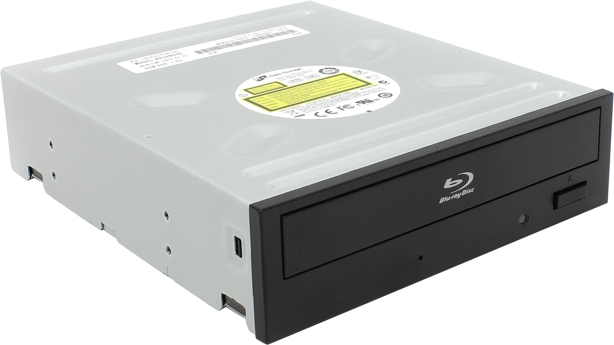
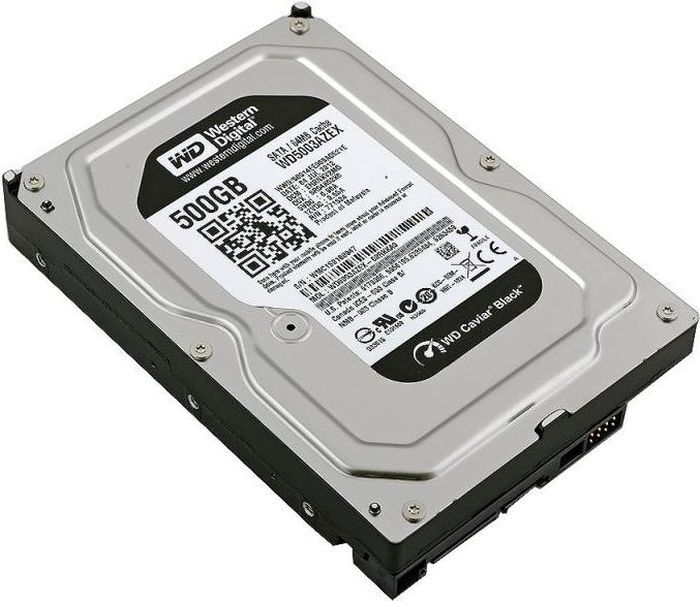

Оптический привод. Основные типы:

- CD-ROM.
- Читает самые обычные CD диски.
- CD-RW.
- Этот вид следует за предыдущим, тут уже появляется возможность не только читать данные с самых простых дисков, но и записывать их.
- DVD-ROM.
- Это уже более современный привод, который имеет возможность считывать данные и с формата DVD.
- DVD-RW.
- Этот вид выполняет все вышеперечисленные функции.
Рисунок 11.
Жёсткий диск. Его свойства:

- Интерфейс подключения.
- Существует несколько типов, среди которых SATA и IDE являются основными для десктопов.
- Объём буфера.
- Размер буфера составляет от 16 до 256 Мбайт.
- Скорость вращения шпинделя.
- Средняя скорость вращения шпинделя жестких дисков бывает от 5 400 до 15 000 оборотов в минуту.
Рисунок 12.